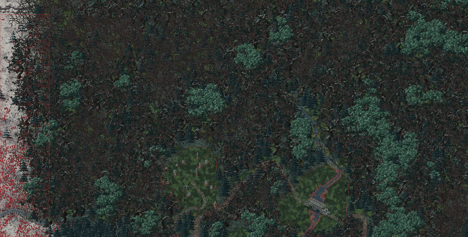
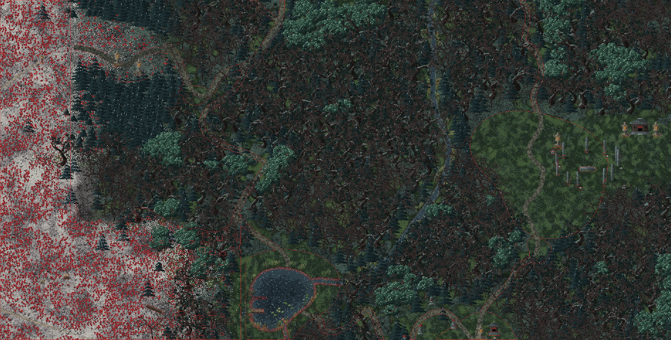
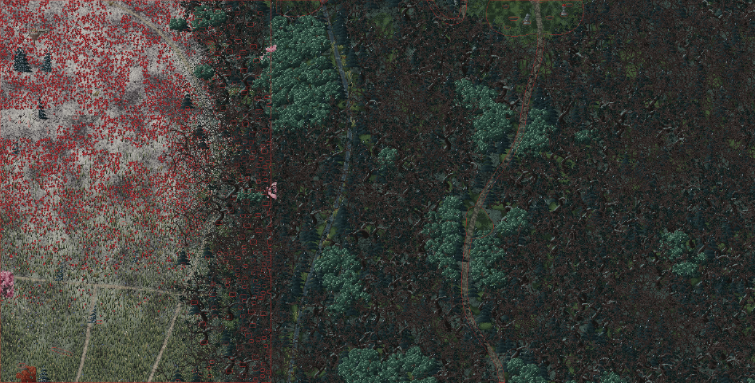
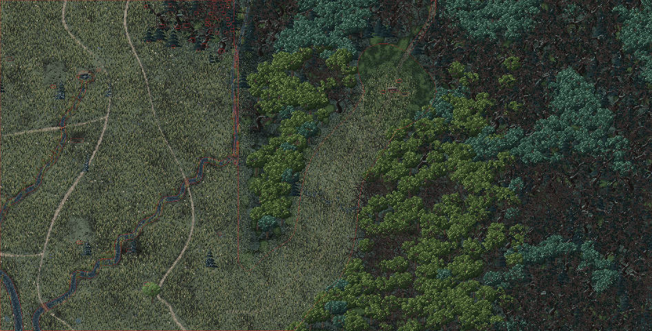
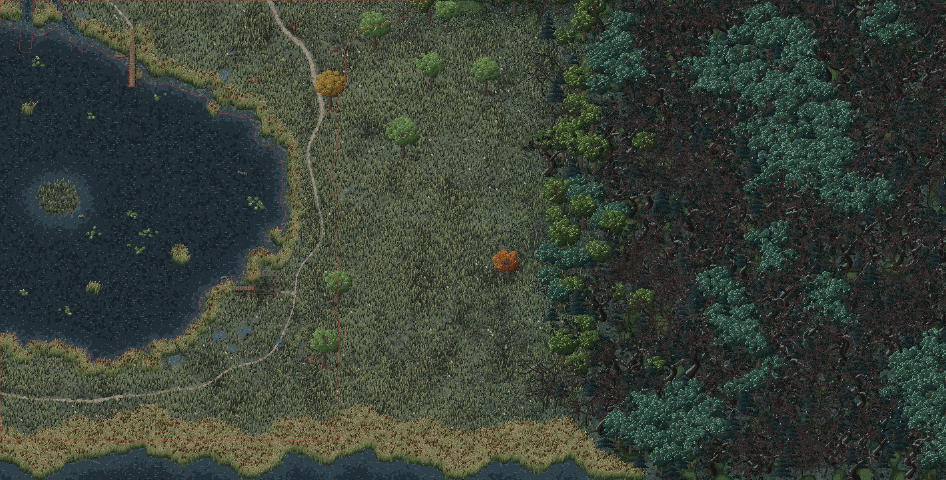
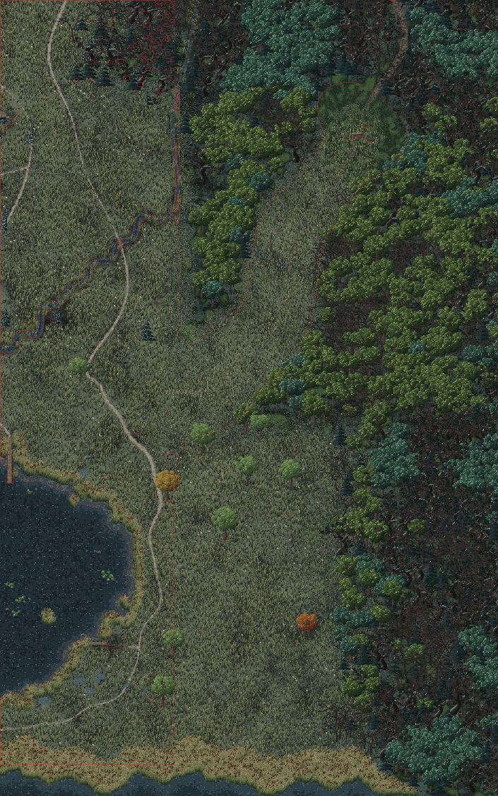
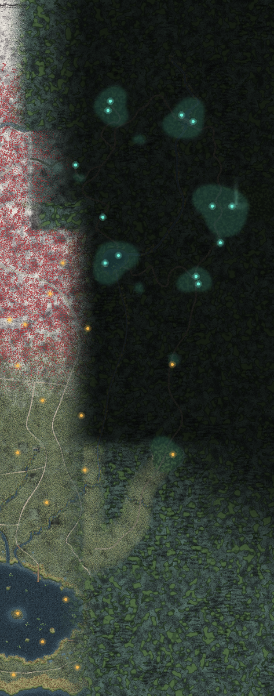
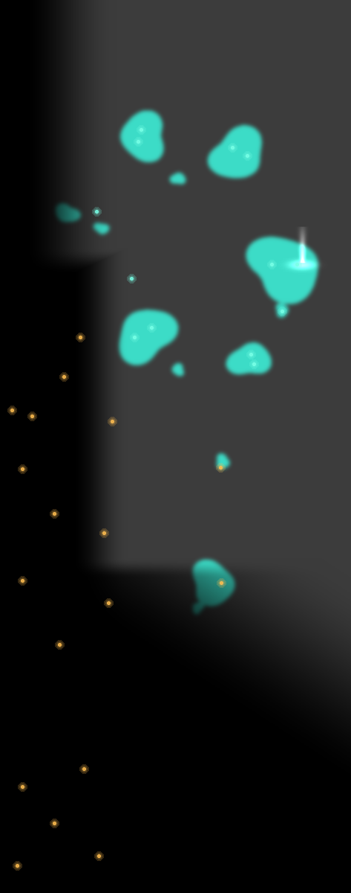

<title>Mohnweg Offen</title>
<meta name="claude:viewport-fit-sides" content="cover">
<link rel="stylesheet" href="https://fonts.googleapis.com/css2?family=Tiny5&family=Alegreya+Sans:wght@400;700&display=swap">
<style>
/* one column, like the phone screen the game lives on; the game's own dusk palette, single dark look */
:root{--bg:#1d1c20;--paper:#2a282d;--ink:#e8e2d6;--dim:#9a958d;--poppy:#c43c34;--line:#3e3a3f;
--pix:"Tiny5",ui-monospace,monospace;--body:"Alegreya Sans",system-ui,sans-serif;color-scheme:dark}
body{background:var(--bg);color:var(--ink);font:17px/1.55 var(--body);padding-left:max(16px,env(safe-area-inset-left,0px));padding-right:max(16px,env(safe-area-inset-right,0px));padding-block:28px 48px}
main{max-width:640px;margin:0 auto;display:grid;gap:28px}
h1{font:400 40px/1 var(--pix);margin:0;letter-spacing:.02em}
h1 small{display:block;font:15px var(--body);color:var(--dim);margin-top:10px;letter-spacing:0}
h2{font:400 22px var(--pix);margin:0 0 6px}
summary{list-style:none;cursor:pointer;display:grid;gap:4px;position:relative;padding-right:28px}
summary::-webkit-details-marker{display:none}
summary::after{content:"+";position:absolute;right:0;top:0;font:400 22px var(--pix);color:var(--dim)}
details[open]>summary::after{content:"–"}
summary:focus-visible{outline:2px solid var(--poppy);outline-offset:4px}
details.step:not([open]){padding-block:12px}
.step{background:var(--paper);border:1px solid var(--line);padding:18px;display:grid;gap:14px}
.tag{font:13px var(--pix);color:var(--poppy);letter-spacing:.08em}
p{margin:0}
.shots{display:grid;grid-template-columns:repeat(auto-fit,minmax(220px,1fr));gap:12px}
figure{margin:0;display:grid;gap:6px}
figure img{width:100%;image-rendering:pixelated;border:1px solid var(--line)}
figure video{display:block;width:100%;height:auto;max-width:100%;image-rendering:pixelated;border:1px solid var(--line);background:#000}
figcaption{font-size:14px;color:var(--dim)}
.sounds{display:grid;gap:14px}
audio{width:100%}
ul{margin:0;padding-left:20px;display:grid;gap:4px}
.ask{border-left:3px solid var(--poppy);padding-left:12px}
.chapters{position:sticky;top:0;z-index:5;background:var(--bg);display:flex;flex-wrap:wrap;gap:8px;padding:10px 0;border-bottom:1px solid var(--line)}
.chapters button{font:14px var(--pix);letter-spacing:.04em;color:var(--ink);background:var(--paper);border:1px solid var(--line);padding:8px 12px;cursor:pointer}
.chapters button[aria-pressed="true"]{border-color:var(--poppy);color:var(--poppy)}
.toc{display:grid;gap:6px}
.toc:empty{display:none}
.toc a{color:var(--ink);text-decoration:none;background:var(--paper);border:1px solid var(--line);padding:8px 12px;font-size:15px}
.toc a b{color:var(--poppy);font-weight:400;font:12px var(--pix);letter-spacing:.06em;margin-right:8px}
.step h2[id]{scroll-margin-top:70px}
details.step{scroll-margin-top:70px}
</style>
<main>
<h1>Mohnweg<small>Offen: nur, was noch deine Antwort braucht (Stand 2. 11., Ostwald fertig gebaut, Kanten und Klänge zur Abnahme). Alles Abgenommene steht in der alten Abnahme-Seite (Archiv).</small></h1>
<details class="step" id="welt" open><summary><div class="tag">SCHRITT 47 · OSTWALD · DIE GANZE WELT AM STÜCK</div><h2>Alle Übergänge, von oben nach unten</h2></summary>
<p>Du hattest recht: an jedem Gebiet saß eine harte Kante. Ich habe nicht mehr einzelne Stellen geflickt, sondern jede Naht der Welt durchgesehen und überall dasselbe gemacht: weiche, gestreute Übergänge über 90 bis 240 Pixel. Hier die ganze Welt vom Mohnfeld (links) bis zum Weltrand im Osten, in fünf Streifen von oben nach unten (ohne Abendfilter; die roten Linien sind nur die Begehbarkeit und im Spiel nicht zu sehen).</p>
<div class="shots" style="grid-template-columns:1fr">
<figure><figcaption>1 · Norden: Gräberlichtung, Steinbrücke mit Fluss. Der Wald reicht bis zum oberen Weltrand, der Mohn läuft links in den Wald aus.</figcaption></figure>
<figure><figcaption>2 · Waldtor, Teich, Ritualplatz. Die dichte Tannenwand an der alten Ostkante ist weg.</figcaption></figure>
<figure><figcaption>3 · Mohn und Wiese gehen über rund 240 Pixel in den Wald über.</figcaption></figure>
<figure><figcaption>4 · Waldsaum: die Laubbäume wachsen von der Wiese her ein, der Bach läuft jetzt durch bis zum Bach des Südens.</figcaption></figure>
<figure><figcaption>5 · See im Südwesten: der See und sein Ufer bleiben komplett frei, die Wiese läuft östlich weiter und wird erst weit hinten zum Wald.</figcaption></figure>
<figure><figcaption>Nah: Waldsaum und See in einem Stück. Keine Baumreihe mehr an der Wiesenkante, der Wald wächst von der Wiese her langsam ein.</figcaption></figure>
</div>
<p><b>Neu auf deine Hinweise:</b> Die senkrechte Baumreihe am Waldsaum ist weg (der Wald brach dort an der Kante eines Bildfensters ab; jetzt läuft er über mehrere hundert Pixel aus). Der See war an der Südgrenze des Südens nur durch einen schmalen Uferstreifen vom Wald getrennt: Du hattest recht, mein erster Streifen war nur ein kopierter Ausschnitt. Jetzt ist die Uferwiese mit denselben Zutaten gebaut wie der Süden: gleicher Boden (nahtlos aus dem Süden übergeben), wehendes Gras, Wildblumen, Farne, Steine, einzelne Laubbäume. Das Schilf und Wasser am unteren Weltrand läuft weiter und zieht sich nach Osten zurück, mit Wasserbewegung und Nebel wie im Süden. Erst danach beginnt der Wald, zuerst mit vereinzelten Bäumen.</p>
<p><b>Was ich vorher geändert habe:</b> Wald bis zu allen vier Welträndern (vorher flaches Dunkel oben, unten und rechts) · Mohn und Wiese gehen über 240 Pixel in den Wald über, auch die Dunkelheit der Stimmungskarte · die alte Tannenwand am Ostrand des Mohnfelds und der dichte Tannenblock sind weg · alle fünf Orte gehen über 90 Pixel in den Wald über · die Laubmasse am Waldsaum und der Bach durch den Saum · keine Waldbäume auf den Wegen des Südens.</p>
<p class="ask">Sieht die Welt jetzt zusammenhängend aus? Falls dir noch eine Stelle auffällt, markier sie, ich suche dann auch die gleichartigen Stellen mit.</p>
</details>
<details class="step" id="musik" open><summary><div class="tag">SCHRITT 48 · OSTWALD · MUSIK</div><h2>Dunkle Fassung mit zweiter Stimme</h2></summary>
<p>Dir war die Musik schräg und nur ein Instrument. Zwei Änderungen an der dunklen Fassung: Im Mittelteil kreuzte der linke Bass die tiefe Melodie, jetzt liegt er eine Oktave tiefer und die Melodie oben. Dazu spielt eine <b>Shakuhachi</b> die Melodie mit. Die Wiesenfassung ist unverändert.</p>
<div class="sounds"><figure><audio controls preload="none" src="ton/musik_dunkel.ogg"></audio><figcaption>Dunkle Fassung (Wald), neu</figcaption></figure><figure><audio controls preload="none" src="ton/musik.ogg"></audio><figcaption>Wiesenfassung zum Vergleich</figcaption></figure></div>
<p class="ask">Klingt es jetzt stimmig? Falls es noch schräg ist: an welcher Stelle (Minute:Sekunde)? Ist die Flöte zu laut oder zu leise?</p>
</details>
<details class="step" id="stimmung" open><summary><div class="tag">SCHRITT 49 · OSTWALD · STIMMUNGSKARTE UND GLÜHWÜRMCHEN</div><h2>Wo es dunkel ist, wo das Mondlicht liegt, wo die Glühwürmchen schweben</h2></summary>
<p>Das Spiel dunkelt den Wald mit einer eigenen Karte ab, die der Nachbearbeitungs-Shader liest. So sieht sie aus, mit den Glühwürmchen-Schwärmen eingezeichnet.</p>
<figure><figcaption>Annäherung an das Spielbild (der echte Shader ist etwas feiner): Links Mohnwiese und Süden hell, nach Osten wird es über etwa 150 Pixel allmählich dunkel. In den Lichtungen liegt grünliches Mondlicht. <b style="color:#78ffe6">Türkise Punkte</b> = kalte Glühwürmchen im Wald (an Gräberlichtung, Brücke, Teich, Ritualplatz, Jizō-Weg und je eins an den langen Wegen). <b style="color:#ffbe50">Orange Punkte</b> = warme Glühwürmchen (Mohnwiese, Süden, die Waldwiese und der Saum).</figcaption></figure>
<figure><figcaption>Die Karte selbst: grau = Dunkelheit (je heller das Grau, desto dunkler im Spiel), türkis = Mondlicht in den Lichtungen, weiß = der blasse Lichtschacht über dem Altar im Osten.</figcaption></figure>
<p>Die Dunkelheit läuft über denselben 240 Pixeln wie der Mohn-Übergang weich in den Wald, ohne Kante.</p>
<p class="ask">Passt es, dass der Wald so dunkel ist, die Lichtungen aber hell genug zum Lesen? Sind es genug Glühwürmchen, zu viele, zu wenige? Soll irgendwo noch ein Schwarm hin?</p>
</details>
</main>
<script>
// remembers which steps you folded, on this device only
document.querySelectorAll('details.step').forEach(d=>{
  try{const v=localStorage.getItem('zu-'+d.id); if(v!==null) d.open=v==='0';}catch(e){}
  d.addEventListener('toggle',()=>{try{localStorage.setItem('zu-'+d.id,d.open?'0':'1');}catch(e){}});
});
</script>
